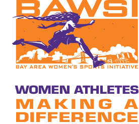

In the summer of 1999, the U.S. Women's National Soccer Team defeated China to win the Women's World Cup in the Rose Bowl, the climax of a three-week, 16-team tournament that remains history's most successful women's sports event, drawing more than 600,000 spectators. It also represented the most visible achievement of the women's sports movement in the United States since the 1972 enactment of federal Title IX, which required schools and colleges to provide equal sports opportunvibeities to girls and women. Athletes like Brandi Chastain and Julie Foudy, who led that team to the World Cup, spawned the Women's United Soccer Association in 2001, the world's first women's professional soccer league. But in 2003, after only three seasons, the league folded, and team organizations created by some of the most accomplished athletes and administrators in women's sports were disbanded.
The Bay Area Women's Sports Initiative - BAWSI - arose from the remnants of that effort, created to ensure that the WUSA would not be the zenith of a short-lived golden age of women's sports but rather another step toward women's full achievement in the sports world. BAWSI's programs began with a critical look at the unmet needs in our community and took shape after imagining a profound change for a better world.